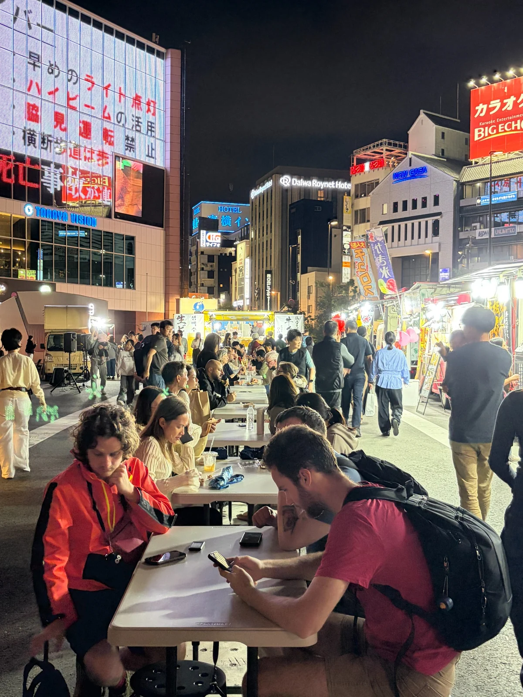
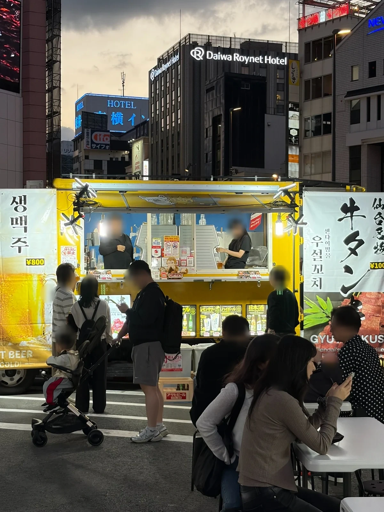
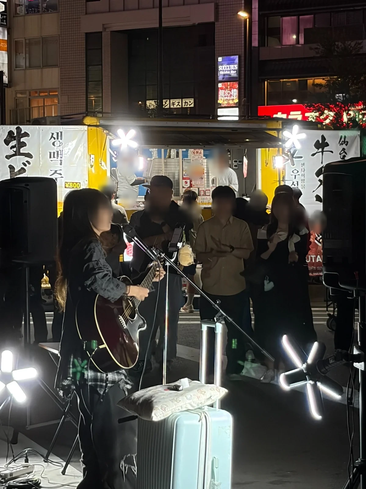

01
CEREMONY & SPECIAL EVENTS
自衛隊記念行事
自衛隊の記念行事において、多数の出店実績があります。現場のルールや安全・衛生管理を大切に、丁寧な対応を心がけています。
記念行事への出店実績OUR EXPERIENCE / EVENT & CATERING
たくさんの出会いと、たくさんの笑顔。
sun smileは、夫婦でつくった黄色いキッチンカーで、さまざまな会場においしさを届けてきました。

お祭りから企業の催事まで、会場ごとの条件や来場者に合わせ、出来たてのおいしさをお届けしています。
CEREMONY & SPECIAL EVENTS
自衛隊の記念行事において、多数の出店実績があります。現場のルールや安全・衛生管理を大切に、丁寧な対応を心がけています。
記念行事への出店実績SMILEPARK / EVENT ACTIVITIES
SmileParkの開催に関わり、キッチンカーの集約・調整、ステージ出演者の調整、会場との連絡など、イベントづくりに取り組んでいます。
SmileParkの開催・調整FESTIVALS & LOCAL MARKETS
九州各地のイベントやマルシェへ出店。小さなお子様から大人の方まで楽しんでいただける商品をご用意しています。
地域イベントでの販売実際の出店風景をご紹介します。


sun smileは、キッチンカーの出店に加え、イベント開催に関わる調整業務にも携わってきました。
出店者との連絡や取りまとめの経験があります。
ダンス・歌・和太鼓など、ステージ出演者との調整にも携わっています。
現場の条件や安全面を確認し、関係者と連携して準備を進めます。
※ イベント全体の主催・運営を一律に請け負うものではありません。ご相談内容に応じて対応範囲をご案内します。
LET'S WORK TOGETHER
キッチンカーの出店依頼や企業催事、地域イベントのご相談をお待ちしています。
九州各地・山口県・広島県もご相談可能